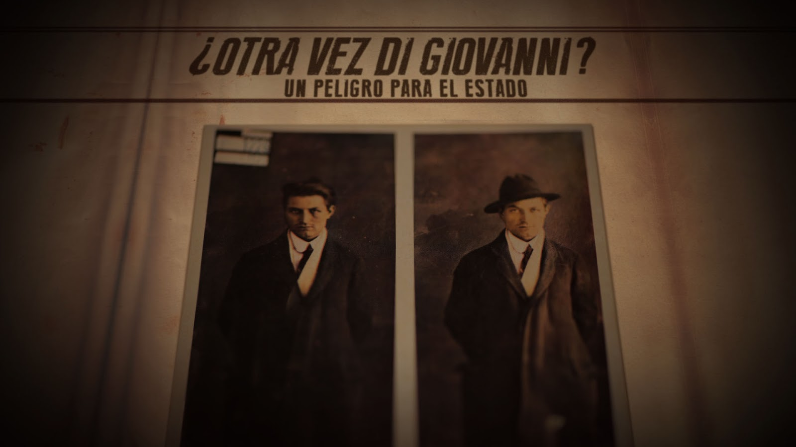

Entrevista a Daiana Rosenfeld, directora de “Los ojos de América”. – Por Matías De Rose
Los ojos de América (amor y anarquía)

El jueves 20 se estrenó en el cine Gaumont -espacio INCAA- Los Ojos de América,
documental ganador del concurso DOCTV Latinoamérica IV. Dirigido por Daiana Rosenfeld y
Aníbal Garisto, trata sobre la apasionada historia de amor que protagonizaron los anarquistas
América Scarfó y Severino Di Giovanni en los albores de la década infame.
América Scarfó protagonizó una apasionada historia de amor. Una de las más polémicas que hubo en la Argentina, considerando que las mujeres, por aquel entonces, no gozaban de muchas de las libertades y derechos que posteriormente irían conquistando. En 1929, con catorce años de edad, América conoció a Severino Di Giovanni (27), el anarquista expropiador más buscado del país en la década del '20, y se enamoraron rápidamente.
Di Giovanni era un joven italiano que, como muchos otros, decidió exiliarse en la Argentina tras el establecimiento del fascismo de Mussolinni en Italia. Se había casado con su prima Teresa Masciulli, con quien tuvo tres hijos una vez establecidos en Morón, provincia de Buenos Aires. Pero nada, ni la edad ni las convenciones sociales ni los prejuicios, pudieron impedir que su amor hacia aquella niña prosperara. Con América se identificaban, además, en los ideales libertarios de un movimiento político y social que tuvo un peso muy fuerte en la Argentina anterior a la dictadura militar de José Félix Uriburu (1930-1932).
Una las realizadoras del documental, Daiana Rosenfeld, destaca la búsqueda de “una historia de amor tan apasionada en un contexto histórico como la década del ´20 en nuestro país: un momento signado por el anarquismo, la lucha por el cambio social, por pensar en un mundo diferente posible”. Y añade que “con la llegada de los inmigrantes, sobre todo italianos y españoles, arribó también la idea de un cambio social, con aires libertarios y horizontales, con ideas revolucionarias que la primera dictadura militar y los magnates imperialistas de turno intentaron exterminar. En ese sentido, la muerte de Severino y Paulino Scarfó -hermano de América-, el show mediático que se generó alrededor de tan salvaje hecho de pena de muerte, la cobertura de los medios de comunicación, habla de un momento histórico y de una sociedad que no estaba preparada para el cambio, un pueblo que no quería ser libre”.
A partir de documentos personales extraídos de Severino Di Giovanni, el idealista de la violencia, una ensayo del escritor Osvaldo Bayer, testimonios y sobre todo de las cartas de amor que Severino le enviaba a su amada, se va reconstruyendo la consolidación de la relación. Es por esta razón que el documental exhibe una narrativa epistolar que da cuenta de los detalles de su intimidad. Hubo entre ellos encuentros clandestinos y visitas fugaces, hasta que finalmente juntos comenzaron un proyecto de vida con una economía autosuficiente y una organización horizontal, que era consecuente con sus ideas, y que concluye cuando a Severino lo fusilan en al año 1931, a los 29 años de edad. Desde ese momento América se refugió en el anonimato.
Es interesante la apuesta en términos visuales, compuesta por recreaciones, imágenes simbólicas y fotografías llenas de vida, de manera que la mirada de Di Giovanni en primer plano cobra una inquietante presencia; sus ojos están llenos de brillo y de preguntas. Según Rosenfeld, “una búsqueda más poética que estrictamente documental es interesante para reflejar una cierta intimidad que hace de espejo con un contexto social y político de la época. En ese sentido y al usar como documentos principales las cartas, fue necesario una reconstrucción visual más acorde con los relatos en cuanto a la forma, por eso la estética en ese punto es más jugada. Además, el archivo audiovisual y fotográfico era muy escaso y fue necesario apuntar a recrear una atmósfera acorde con la narración”.
Este documental surgió de una investigación sobre mujeres anarquistas de la Argentina, tema que la realizadora seguirá recorriendo en su próximo trabajo, cuando reconstruya la vida de Salvadora Medina Onrubia. Anarquista, teósofa, dramaturga y poeta, la esposa de Natalio Botana, el fundador del Diario Crítica. La historia indaga en la vida de Salvadora desde una reconstrucción subjetiva acerca del mundo: como mujer, como madre soltera a los dieciséis años en la década del ´10, como dramaturga y como anarquista.
“Me interesa rescatar los valores del anarquismo” -reflexiona- “aquellos que llegaron a fines del siglo XIX y comienzos del XX para hablarnos de la libertad individual y colectiva, de un cambio profundo, de la igualdad y la humanidad, del ser consecuente a nivel cotidiano con las acciones que uno lleva a cabo. Como dice América en la carta que le enviaba al pensador francés Emile Armand: "No hay que contentarse con esperar, sino que se hace necesaria nuestra acción cotidiana. Hay que liberarse de prejuicios, falsedades morales y códigos absurdos".
TRAILER
Ficha técnica:
Los Ojos de América (Argentina, 2015). Documental histórico.
Dirección, guión, producción, fotografía y montaje: Daiana Rosenfeld y Aníbal Garisto.
Dirección de sonido: Gaspar Scheuer.
Música: Martín Rodríguez.
Motion Graphics: Fernando Motrel.
Dirección de arte: Viviana Haimovitz.
Asistente de producción: Mía Cardeña Haro.